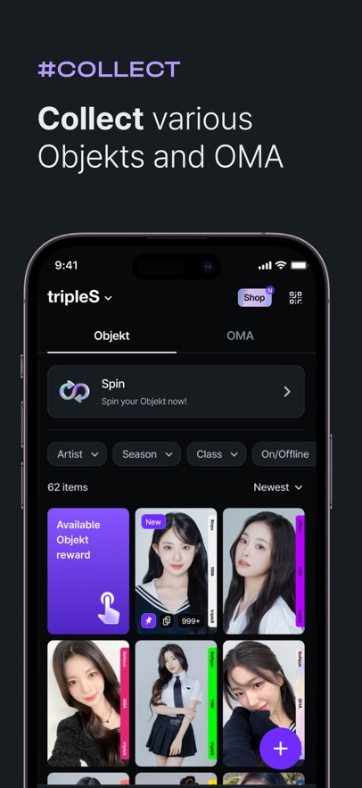

装 Cosmo 半年，我想说说时间让它显出的样子
从跟风注册到养成每天打开的习惯，半年时间里 Cosmo 哪些地方越用越顺手、哪些地方慢慢暴露了问题？一个老用户的平淡长期使用报告。
当初为什么装它
坦白说，我装 Cosmo 不是冲着它的功能去的——朋友在群里晒了一张 Grid 合成的成品卡，我看那精致度，觉得这玩意儿做得确实不糊弄人，就顺手从官方下载拿了安装包装了。没做功课，不知道它是 tripleS、ARTMS、idntt 三个组合共用的粉丝平台，后来去它的官网才搞清楚这些组合分别是什么，也没搞明白 COMO、Gravity、Talk 这些名词各自是什么意思。就是觉得界面干净、卡片做得好看，先装了再说。

越用越顺手的地方
装它到现在算半年，从最早版本用到 2026 年夏季那次大更，有几个变化是明确能感觉到的。
收藏流程从乱到稳。 最初收到的小卡品类杂，欢迎小卡、活动卡、登录奖励混在一起，我也分不清哪些能转赠、哪些只能自己留。后来版本更新把卡的分级体系理清楚了——First Class、基础 Type 这些等级名虽然记不全，但卡上会直接标能不能流通，放进收藏里 COMO 产出多少也有明确说明。六天连续登录奖励是我这批老用户最早吃到的甜头，断签从头再来这个规则一开始觉得太硬，后来发现反而让我养成了每天顺手打开看一眼的习惯。
投票这块做得比预想的要认真。 Gravity 投票刚出来时我以为就是个凑热闹的小游戏，投了一次发现不是——选项说明写得清清楚楚、倒计时准确到秒、票数实时公开，而且投完之后真的会执行。有一次我卡着最后五分钟投，结果高峰期排队了，后来去翻历史 Gravity 页面才看到自己的投票记录确实被计上了。投票前那四项检查（更新应用、切对组合、清点 COMO、看清议题）我现在每次都老老实实走完，旧版本入口异常吃过亏，不敢大意。
Talk 私信是今夏最惊喜的一笔。 我之前没抱太大期望，以为就是个普通粉丝留言板。结果它是真的做成了聊天产品——文字、语音、视频消息都支持，翻译按钮一按就能切偏好语言，甚至能在 Talk 里搜索历史消息。我给主推成员开了通知、其他全关，晚上睡前翻一眼 Talk 成了固定节目。

越用越烦的地方
说好的也得说不好的。有几个问题是越用越冒头，不是第一次就踩到，但每次碰到都觉得"又来了"。
订阅产品线太复杂。 tripleS Membership、ARTMS Membership、idntt Membership，再加上新出的 Pass 和 Pass+，五个档位摆在那里，我至今没完全搞清楚哪个包含哪个权益。朋友追 idntt 问我该不该订 Pass+，我去翻应用内的会员页和Cosmo文档，每条权益都是孤立的 bullet point，没有一目了然的对比表。按月自动续订这个设定本身没问题，但 Cosmo 在推送里很少提醒"你下个月还要扣钱了"，我忘了关过一次，白白扣了一个月。
Gravity 高峰期的体验确实差。 我知道这不是 Cosmo 一家的问题，但投过几次大议题，最后几分钟的提交排队是真的烦。有次我 COMO 余额不够想临时收卡补票，商城页面又加载不出来，眼睁睁看着倒计时归零。官方说过要优化，但半年下来没感觉到明显改善。
社区规范那块的边界模糊。 Talk 里有受限词提示，输入时会标红，但我试过几个没触发的词在另一条消息里又被拦了。应用内客服反馈路径藏得深，出问题了找半天。换机重装时订阅恢复购买的按钮点了两次才成功，具体是网络问题还是 Cosmo 服务器的问题至今没搞明白。
每天离不开的和碰都没碰的
半年用下来，有两样东西成了我每天必须碰的。
一是Collect 页的 COMO 产出。打开应用第一件事就是去 Collect 看一眼今天的产出额，虽然数字不大，但那种"我的收藏每天在帮我攒资源"的感觉很实在。二是首页的 Gravity 入口，有没有进行中的投票、倒计时剩多少，扫一眼就知道。
反过来，Spin 翻卡我碰都没再碰过。早期尝试了两次，感觉就是靠运气，投入产出比完全不可控。会员订阅到现在没订过，免费用户的直播、回放、投票基础权益对我来说够用，订阅标识和专属互动场景暂时还没打动我。
时间修正了我当初的判断
说个反直觉的：当初装它是冲卡片精美度，半年后发现真正把我留住的不是卡片，是 Gravity 的参与感。
我最早的判断是 Cosmo = 一个好看的卡片收集小游戏。现在看来它底层在做的是"让粉丝觉得自己的参与是有重量的"——投票结果真的执行、COMO 真的能流通、收藏真的有产出。卡片精美度是敲门砖，但 Gravity 那套"倒计时 + 公开票数 + 可追溯记录"的设计才是核心粘性。
另一个修正：当初觉得订阅产品线乱是设计失误，现在有点理解了——三个组合分开订阅是刻意的，追哪组订哪组不强制全订。但理解归理解，没有权益对比表这件事还是 Cosmo 该补的课。
去留结论
会不会卸载？不会。至少现在不会。
它还在快速迭代，夏季那次大更加了 Talk，说明团队在听老用户的反馈。Gravity 高峰期排队的问题没解决，但投票本身的认真态度没变。订阅产品线的混乱短期也不会根治，但免费用户的核心体验一直在放宽。
什么信号出现我会考虑换？如果 Gravity 连续两三期出现"我投了但记录查不到"的情况，或者 Collect 页的 COMO 产出突然停了，那才是真正动摇的时刻。现在这些问题都还在"能忍"的范围里。
最后说句实在的——我追的三个组合里有两个在 Cosmo 上，而且卡片收藏已经攒了小两百张了，光沉没成本就够我继续用下去。但更重要的是，它确实让我每天有个理由打开手机，哪怕只是看一眼 Gravity 倒计时。这种"有东西在等着我"的感觉，比任何花哨功能都实在。上面翻到的那份 Cosmo 资料在GitHub、Gitee、GitCode三个仓库都能拿到，国内网络访问哪个方便就看哪个。